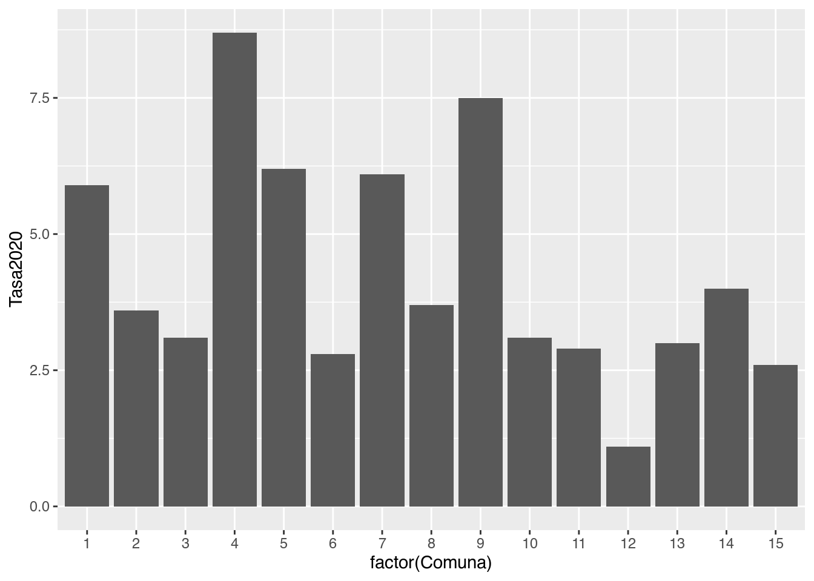
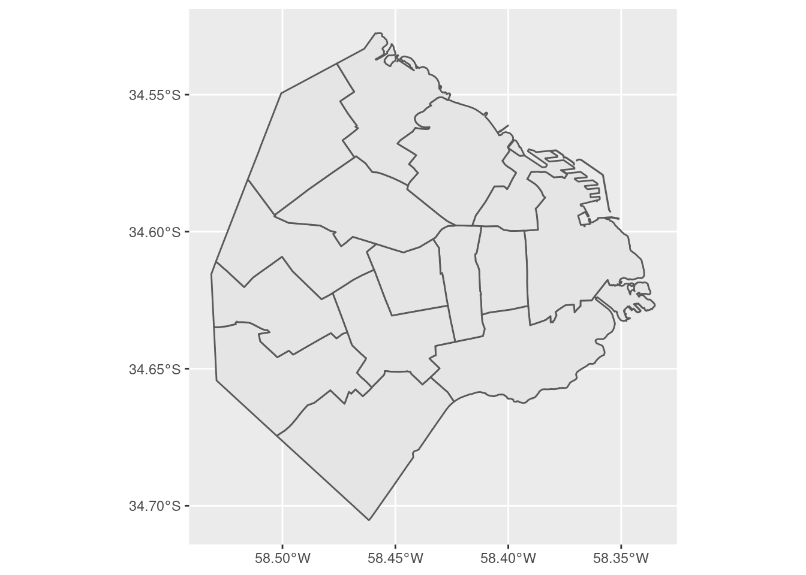
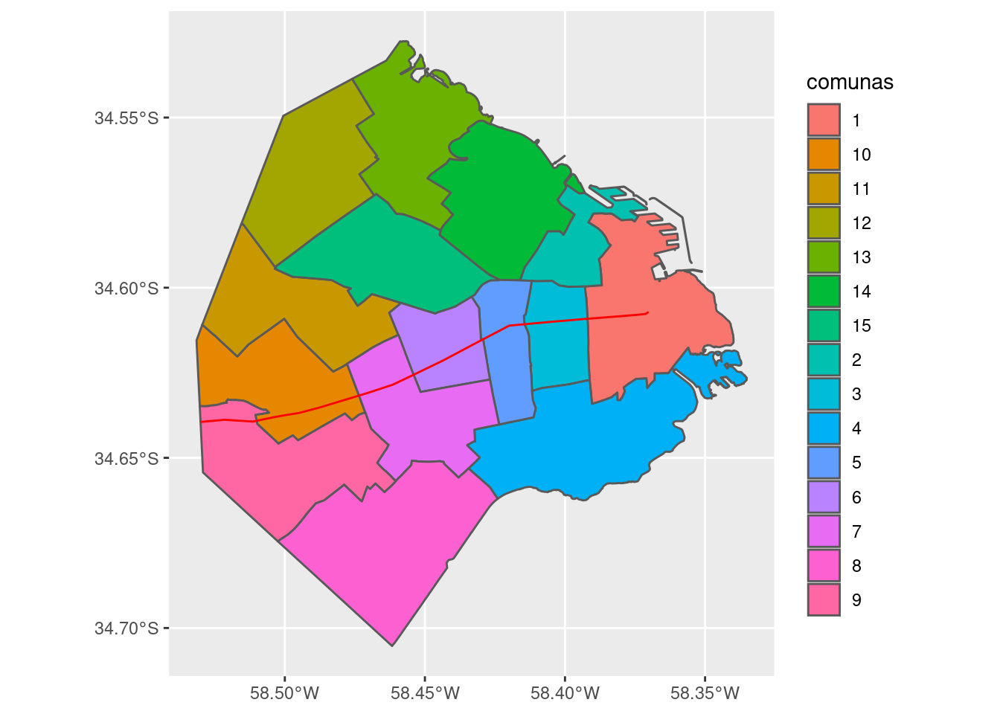
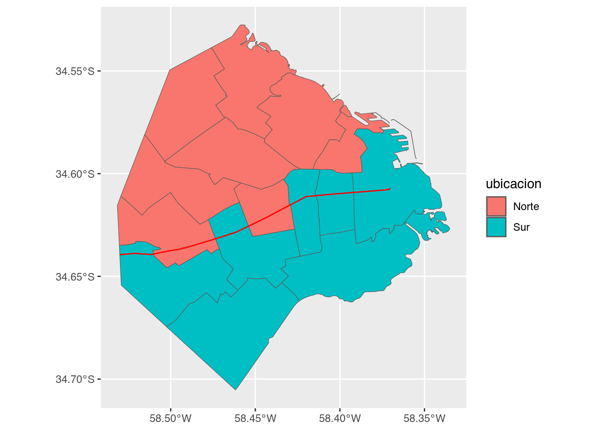
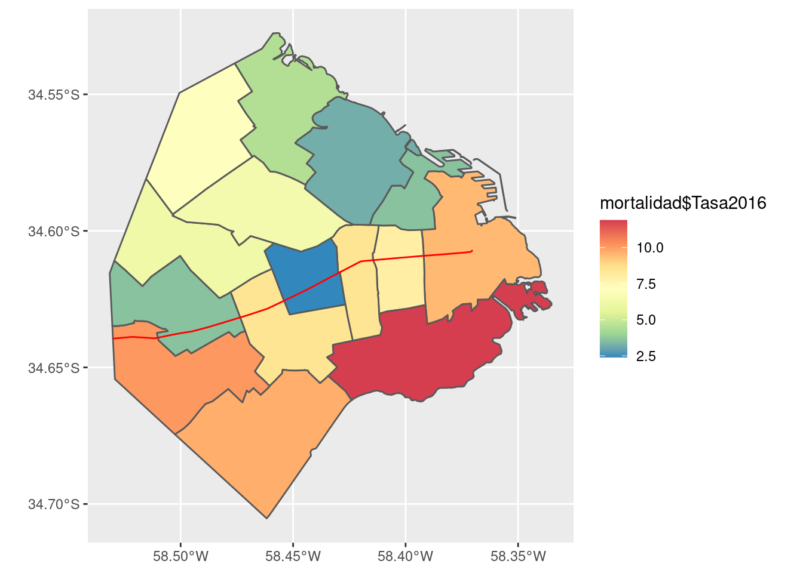
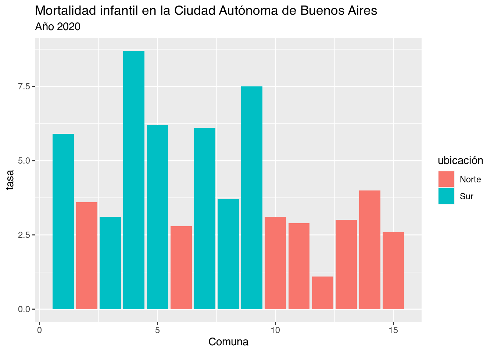

2 Una presentación a toda marcha de R
R es un lenguaje de programación especializado en análisis y visualización de datos. Es un producto de código abierto, lo cual significa que cualquier persona puede usarlo y modificarlo sin pagar licencias ni costos de adquisición de ningún tipo.
Expertos de todo el mundo colaboran en forma activa con el proyecto, no sólo desarrollando el lenguaje en sí (llamado “R base”), sino también extendiéndolo con nuevas habilidades que pueden ser incorporadas por los usuarios finales en forma de “paquetes” instalables.
La calidad del lenguaje en sí, de los paquetes instalables que le agregan un sinfín de funciones (desde algoritmos de inteligencia artificial hasta mapas interactivos) y de la comunidad de usuarios que comparte información en foros y blogs, ha hecho de R uno de los lenguajes de programación más populares del mundo. En el campo del análisis de datos, es la herramienta por excelencia en muchas universidades, empresas de tecnología, y redacciones de periodismo de datos.
2.1 Nuestro primer proyecto en R
A continuación reproduciremos un ejercicio paso a paso, para ilustrar la potencia de una herramienta de análisis como R. Que nadie se preocupe si algunas de las operaciones parecen no tener sentido, o resultan arbitrarias. ¡Es normal! Nadie aprende un lenguaje en 10 minutos, sea R o esperanto. La idea es tener exposición temprana a un caso de uso interesante, usando datos reales. Y que nos sirva como motivación para practicar luego ejercicios básicos que son muy necesarios pero, a veces, no tan emocionantes.
2.1.1 A investigar: ¿Cual es la diferencia en mortalidad infantil entre el sur y el norte de la Ciudad Autónoma de Buenos Aires?
Buenos Aires es una ciudad que desde hace décadas presenta una marcada polarización entre sus barrios del sur, relativamente menos desarrollados, y los del norte donde el nivel socioeconómico y la calidad de vida son mayores.

Figura 2.1: Artículo en la edición online de El País
Uno de los aspectos más lamentables de la disparidad norte-sur, y sin duda de los que más polémica y acusaciones cruzadas ha generado, es la diferencia en la tasa de mortalidad infantil de acuerdo a la región de la ciudad.
¿Qué tan grande es esa diferencia? ¿Cómo se distribuye geográficamente?
Vamos a utilizar R para responder esas preguntas y visualizar los resultados de nuestro análisis, utilizando como fuente cifras oficiales publicada por la ciudad.
2.1.2 Crear un proyecto en RStudio
El primer paso es ejecutar RStudio, que ya deberíamos tener disponible en nuestro sistema.
Una vez abierta la interfaz gráfica, creamos un proyecto nuevo, cliqueando en File -> New Project... -> New Directory -> New Project. En la ventana que surge, elegir un nombre para el proyecto (por ejemplo, “Practicando R”) y finalizar la operación cliqueando en Create project.
Utilizar proyectos nos permite continuar otro día desde donde dejamos la tarea al terminar una sesión. Es sólo cuestión de recuperar el proyecto deseado la próxima vez que abrimos RStudio, cliqueando en File -> Recent Projects -> "nombre de mi proyecto".
Por ahora, sigamos trabajando. Vamos a crear un “script”. Un script, como su nombre en inglés lo indica, es un guión; una serie de pasos que escribimos para que nuestra computadora ejecute en secuencia. Cliqueamos en File -> New File -> R Script. De inmediato se abre una ventana con un editor de texto. ¡Ahora empieza la acción!
2.1.3 Escribiendo un script
Aprovechemos para dar un nombre a los áreas que vemos en RStudio:

Figura 2.2: La interfaz de RStudio
Vamos a escribir nuestro código (las instrucciones que R entiende) en el panel de edición. Los resultados van a aparecer en la consola (cuando se trate de texto) o en el panel de salida (cuando produzcamos gráficos)
Por ejemplo, podemos escribir el panel de edición la instrucción para mostrar el resultado de una operación matemático:
sqrt() es una función. En el mundo de la programación, las funciones son secuencias de código ya listas para usar, que realizan tareas útiles. Por ejemplo, mostrar algo en pantalla. En nuestro caso, completamos la función con algo más: un parámetro, pues así se le llama a los valores que una función espera de parte del usuario para saber que hacer. La función sqrt() espera que le demos un número para el cual calcular su raíz cuadrada (square root en inglés), y eso hicimos: le pasamos cómo parámetro 144, un número. Los parámetros siempre se escriben entre paréntesis, a continuación del nombre de la función.
Ahora vamos a aprender la combinación de teclas más importante al usar RStudio: Ctrl + Enter. Presionar Ctrl + Enter al terminar de escribir una instrucción hace que RStudio la ejecute de inmediato, y espere en la siguiente instrucción, si la hubiera.
También podemos buscar una línea que deseemos ejecutar, posicionando el cursor de texto (que luce como una barra vertical que titila, en el panel de edición) sobre ella. Si a continuación pulsamos Ctrl + Enter, la línea será ejecutada y el cursor se moverá sólo hasta la siguiente línea, listo para repetir el proceso.
La modalidad de ejecución línea por línea es muy útil para lo que se llama “análisis interactivo”. Uno ejecuta un comando, observa el resultado, y en base a eso decide su próxima acción: cambiar parámetros e intentarlo de nuevo, dar por buenos los resultados y usarlos para una tarea subsiguiente… etc.
Por ejemplo, si escribimos las siguientes líneas:
…y posicionamos el cursor en cualquier posición de la primera línea, para luego pulsar Ctrl + Enter tres veces, veremos que las instrucciones son ejecutadas línea a línea.
## [1] 12## [1] "Hola mundo"Dos de ellas (la primera y la última) mostraron una salida en pantalla, y la del medio, no. Esto es porque algunas operaciones entregan algo como resultado -un número, un texto, un gráfico, u otros tipos de salida que ya veremos- mientras que otras hacen su tarea silenciosamente sin expresar nada. En este caso, la operación silenciosa fue la de asignación: mensaje <- "Hola mundo" es una instrucción que le pide a R que cree una variable llamada “mensaje” (o que la encuentre si ya existe) y que le asigne como valor el texto “Hola mundo”. ¿Cómo sabemos que la instrucción se llevó a cabo, a pesar de no producir una salida? En general, es un tema de confianza. Si una instrucción no genera un mensaje de error, si es silenciosa, se asume que pudo cumplir su cometido. En este caso, además lo hemos verificado. La línea final, mensaje pide a R que busque la variable, y muestre en pantalla su contenido (esa es una característica muy práctica del lenguaje: para saber el contenido de una variable, basta con escribirla y ejecutar la línea). Y al hacerlo, comprobamos que la variable contiene precisamente lo que hemos tipeado.
De paso, hay que mencionar que la creación y manipulación de variables es un concepto clave en programación. Trabajar con variables nos permite almacenar valores para usarlos después, además de hacer nuestro código más fácil de leer y compartir con otros, en especial cuando usamos nombres de variable auto-explicativos. Como ejemplo de ésto ultimo comparemos
## [1] 48… con
ancho_habitacion_m <- 8
profundiad_habitacion_m <- 6
superficie_habitacion_m2 <- ancho_habitacion_m * profundiad_habitacion_m
superficie_habitacion_m2## [1] 48En su resultado ambas expresiones son iguales, dado que producen lo mismo. Pero la segunda esta escrita de una forma mucho más clara para un ser humano, que hace más fácil interpretar su lógica… ¡está calculando la superficie en metros cuadrados de una habitación!. Es muy importante escribir nuestro código de la forma más explícita posible, aunque requiera tipear un poco más. Con ello, le hacemos la vida más fácil a otras personas que interpreten nuestros programas. Y también a nosotros mismos en el futuro, cuando debamos lidiar con un programa que escribimos tiempo atrás y del que a duras penas recordamos su lógica.
A todo esto… ¿no se suponía que íbamos a investigar la mortalidad infantil en la Ciudad de Buenos Aires?. Suficiente introducción… ¡allá vamos!
2.1.4 Cargar los datos
Vamos a cargar datos de mortalidad infantil, por comuna de la ciudad, en el año 2016, publicados por la Dirección General de Estadística y Censos de Buenos Aires. El formato original de los datos es “.xls” (planilla de hojas de cálculo). Yo lo he convertido a .csv (“comma separated values”) un formato muy popular en el mundo de la ciencia de datos, ya que es muy fácil de manipular y compartir entre sistemas… es posible abrir un archivo .csv hasta con el humilde block de notas. Al igual que los archivos .xls, los .csv se utilizan para guardar información tabular: un rectángulo con filas y columnas. R incluye una función que lee archivos .csv, que se llama read.csv. La usamos así:
Obsérvese que los datos están alojados en un servidor de internet (accesibles vía una dirección web). Eso no es problema para la función read.csv(), que con la misma soltura lee archivos guardados en nuestra PC o publicados en un sitio online.
Una vez leído el archivo, para ver el contenido de la variable donde guardamos el resultado -que hemos llamado mortalidad- sólo hace falta escribir su nombre:
## Comuna Tasa2016
## 1 1 9.5
## 2 2 3.6
## 3 3 8.0
## 4 4 11.9
## 5 5 8.5
## 6 6 2.4
## 7 7 8.5
## 8 8 9.7
## 9 9 10.1
## 10 10 3.6
## 11 11 6.2
## 12 12 7.1
## 13 13 4.5
## 14 14 3.2
## 15 15 6.4Vemos que la tabla tiene 15 filas (una por cada comuna de la ciudad) y 2 columnas (una que indica la comuna, y otra con el valor de mortalidad infantil para el año 2016).
Sobre dataframes y datasets: En R, las tablas son llamadas dataframes. El dataframe es el objeto por excelencia del análisis de datos. En concepto, es muy similar a una tabla de Excel; ambos formatos guardan información en celdas identificadas por fila y columna. El dataframe es una estructura de datos digitales en forma de tabla.
Es probable que nos crucemos con un término similar: dataset (o “data set”). Este otro anglicismo se refiere a cualquier colección de datos, también típicamente en formato de tabla, que se publica o comparte. Por ejemplo si un organismo de gobierno publica sus gastos mensuales en internet, en cualquier formato fácil de descargar y abrir, decimos que ofrece “un dataset de gastos”.
Algunas funciones útiles para explorar un dataframe son dim(), que nos da las dimensiones del dataframe (cantidad de filas y columnas), names() que nos dice como se llaman sus columnas (que en general representan variables), y head() que nos permite echar un vistazo rápido al contenido, mostrando sólo las seis primeras filas (ésto es útil porque con frecuencia trabajamos con dataframes que contienen miles o millones de filas, por lo que no tiene sentido tratar de volcar todas en pantalla).
## [1] 15 2## [1] "Comuna" "Tasa2016"## Comuna Tasa2016
## 1 1 9.5
## 2 2 3.6
## 3 3 8.0
## 4 4 11.9
## 5 5 8.5
## 6 6 2.42.2 Visualización: la exploración gráfica de la información
Ahora es vamos a pisar el acelerador. Insisto: nadie debe preocuparse si algunos conceptos parecen ser demasiado complejos. En las próximas secciones practicaremos de forma gradual las técnicas que vamos a usar ahora, y todo tendrá sentido -¡lo prometo!. Pero antes, seamos un poquito irresponsables con el poder de R y empleemos un arsenal sofisticado de herramientas para ver de que somos capaces.
En la introducción hablamos de los paquetes, conjuntos de programas que extienden la funcionalidad de R. Vamos a cargar uno de los paquetes más usados, tidyverse. Tidyverse incluye una gran cantidad de funciones diseñadas por y para practicantes de la ciencia de datos. Estas funciones comparten una filosofía y una sintaxis común, por lo que al aprender una en cierto modo aprendemos a usar todas. El valor que aportan es que, sin dudas, ayudan a realizar de manera más fácil las tareas típicas de la ciencia de datos: importar, limpiar, comprender y comunicar datos.
Si acabamos de instalar R y RStudio, el paquete aún no estará disponible en nuestro sistema. Para instalarlo, usamos la función install.packages() y le pasamos el nombre del paquete deseado, “tidyverse”, entre comillas.
De aquí en más, podremos activar el conjunto de funciones que provee tidyverse cada vez que queramos. Para eso, lo invocamos con la función library():
## ── Attaching packages ─────────────────────────────────────── tidyverse 1.3.0 ──## ✓ ggplot2 3.3.5 ✓ purrr 0.3.4
## ✓ tibble 3.1.3 ✓ dplyr 1.0.7
## ✓ tidyr 1.1.3 ✓ stringr 1.4.0
## ✓ readr 2.0.2 ✓ forcats 0.5.1## ── Conflicts ────────────────────────────────────────── tidyverse_conflicts() ──
## x dplyr::filter() masks stats::filter()
## x dplyr::lag() masks stats::lag()… y listo para usar. La razón por la cual activamos tidyverse es que en este momento nos vienen bien dos de sus funciones: mutate() para modificar valores, y ggplot() para hacer gráficos.
Bien, llega la hora de los gráficos. Vamos a llamar a la función ggplot(), una auténtica navaja suiza para la visualización.
Por ejemplo, veamos a cuanto asciende la tasa de mortalidad infantil en cada comuna durante 2016:

Para realizar una visualización con ésta herramienta, siempre se comienza con la función ggplot(), que crea un eje de coordenadas sobre el cual se pueden agregar capas. El primer parámetro que recibe ggplot() es el dataframe que queremos usar para el gráfico; en nuestro caso, ggplot(mortalidad). Ejecutar sólo ggplot(mortalidad) nos devuelve un gráfico vacío; la gracia está en agregar una o más capas especificando cómo queremos mostrar los datos. Estas capas se agregan con un signo +.
En nuestro ejemplo, geom_col() crea columnas cuya posición en el eje de las x depende de la variable “Comuna”, mientas que la altura (posición en el eje de las y) depende del valor de la variable “Tasa2016”. Existen muchas funciones de tipo “geom_XXX”, que agregan distintas clases de capas al gráfico: geom_point, geom_polygon, geom_text y muchos, muchos más que iremos viendo más adelante.
Cada función “geom_” toma como parámetro un conjunto de definiciones “estéticas” que le indican una variable a graficar (“mortalidad” en nuestro caso), cómo (color, tamaño, etc) y dónde (posición x, posición y del eje). Estos parámetros van siempre dentro de una función auxiliar, aes(). En nuestro ejemplo, “geom_col(aes(x = factor(Comuna), y = Tasa2016))”.
No se preocupen que iremos practicando el uso de ggplot, y su uso se volverá familiar.
En cuanto al gráfico que hemos creado, podemos observar que entre las 15 comunas en la ciudad, la tasa de mortalidad tiene un rango que va de un poco menos de 2,5 a un poco más de 12,5 (esto es, muertes antes del año de vida por cada 10.000 nacimientos).
Pero no se distingue aquello que queríamos comprender: la diferencia entre el norte y el sur de la ciudad. Necesitamos contexto geográfico.
2.2.1 Haciendo mapas
Vamos a presentar un paquete más, el último para éste capítulo: sf. Quizás algunos tengan experiencia con sistemas de información geográfica (GIS por sus siglas en inglés), al estilo de QGIS o ArcGIS, que permiten crear, manipular y combinar archivos con datos espaciales para producir mapas que pueden ser simples o en extremo sofisticados. En R, el paquete sf brinda herramientas que permiten realizar tares similares.
Nuestro objetivo es obtener un mapa de la ciudad de Buenos Aires con sus comunas.
Primero, instalamos sf en caso de que aún no lo hayamos hecho.
Vale la pena insistir: Sólo es necesario instalar los paquetes una vez. De aquí en más, cada vez que queramos echar mano a las funciones incluidas en sf, sólo necesitamos activarlo pues ya estará listo en nuestro sistema. Pedimos a R que active el paquete así:
## Linking to GEOS 3.8.0, GDAL 3.0.4, PROJ 6.3.1Luego, cargamos un archivo georeferenciado con las comunas de la Ciudad Autónoma de Buenos Aires, disponible online en formato geojson, un estándar de representación de datos geográficos que es fácil de usar:
## Reading layer `CABA_comunas' from data source `https://bitsandbricks.github.io/data/CABA_comunas.geojson' using driver `GeoJSON'
## Simple feature collection with 15 features and 4 fields
## geometry type: MULTIPOLYGON
## dimension: XY
## bbox: xmin: -58.53152 ymin: -34.70529 xmax: -58.33514 ymax: -34.52754
## geographic CRS: WGS 84Al igual que cuando usamos read.csv() para leer un archivo .csv y cargarlo como un dataframe, el comando st_read() hace lo propio con archivos de información geográfica, conocidos en la jerga como “shapefiles”. El resultado también es un dataframe, por lo cual podemos practicar el uso de las funciones que ya aprendimos, como dim(), names() y head().
## [1] 15 5## [1] "barrios" "perimetro" "area" "comunas" "geometry"## Simple feature collection with 6 features and 4 fields
## geometry type: MULTIPOLYGON
## dimension: XY
## bbox: xmin: -58.4627 ymin: -34.6625 xmax: -58.33514 ymax: -34.56935
## geographic CRS: WGS 84
## barrios
## 1 CONSTITUCION - MONSERRAT - PUERTO MADERO - RETIRO - SAN NICOLAS - SAN TELMO
## 2 RECOLETA
## 3 BALVANERA - SAN CRISTOBAL
## 4 BARRACAS - BOCA - NUEVA POMPEYA - PARQUE PATRICIOS
## 5 ALMAGRO - BOEDO
## 6 CABALLITO
## perimetro area comunas geometry
## 1 35572.65 17802807 1 MULTIPOLYGON (((-58.36854 -...
## 2 21246.61 6140873 2 MULTIPOLYGON (((-58.39521 -...
## 3 10486.26 6385991 3 MULTIPOLYGON (((-58.41192 -...
## 4 36277.44 21701236 4 MULTIPOLYGON (((-58.3552 -3...
## 5 12323.47 6660526 5 MULTIPOLYGON (((-58.41287 -...
## 6 10990.96 6851029 6 MULTIPOLYGON (((-58.43061 -...Podemos ver que el dataframe contiene 15 filas y 5 columnas. Una fila por comuna (es razonable!) y 5 columnas: “barrios”, “perímetro”, “area”, “comunas” y “geometry”. Nuestro vistazo mediante head() permite asumir que “barrios” informa los barrios que componen cada comuna, mientras que perímetro y área informan sobre las dimensiones del polígono cubierto por cada comuna. La columna “geometry” aparece en todos los dataframes de tipo espacial, y es la que contiene los datos con sus coordenadas geográficas.
Y hablando de coordenadas, generar un mapa a partir de un dataframe espacial creado por sf es muy fácil con la ayuda de ggplot

Si queremos agregar una leyenda al mapa que identifique cada comuna con su número, usamos:
Dentro de “aes()” usé el parámetro “fill” (relleno en inglés) para pedirle a ggplot que llene cada polígono con un color distinto de acuerdo al campo “comunas”.
Aprovechando que tenemos un mapa, deberíamos clasificar las comunas entre las que pertenecen al norte y las que pertenecen al sur de la ciudad. No hay una línea divisoria oficial, pero la traza de la Avenida Rivadavia suele ser tomada como frontera: Rivadavia es la “divisoria simbólica del Norte y el Sur de la Ciudad, con sus diferencias de desarrollo”
Por esas casualidades de la vida, tengo un archivo geográfico que contiene la línea que dibuja a avenida Rivadavia al atravesar la ciudad. Lo bajamos:
## Reading layer `avenida_rivadavia' from data source `https://bitsandbricks.github.io/data/avenida_rivadavia.geojson' using driver `GeoJSON'
## Simple feature collection with 1 feature and 1 field
## geometry type: LINESTRING
## dimension: XY
## bbox: xmin: -58.53014 ymin: -34.63946 xmax: -58.37017 ymax: -34.60711
## geographic CRS: WGS 84Y lo proyectamos sobre el mapa, como una capa adicional del gráfico de ggplot que definimos antes:

La identificación por colores no hace fácil reconocer con rapidez que número corresponde a cada comuna; es un recurso que funciona mejor con menos categorías que nuestras 15. Podríamos arreglarlo, por ejemplo evitando la codificación por color, y dibujando una etiqueta con número dibujada sobre cada comuna. ¡Pero no en este momento! En aras de la sencillez, vamos a aguzar la vista y tomar nota de cuales comunas tienen gran parte de su territorio al sur de la Avenida Rivadavia. Según mi interpretación, son las comunas 1, 3, 4, 5, 7, 8 y 9. (Hay que admitir que la comuna 1 parece estar repartida en partes más o menos iguales, pero vamos a dejársela al sur en forma arbitraria para no complicar el ejercicio).
2.2.2 Agregando datos
En este punto necesitamos una manera de “etiquetar” cada comuna con el punto cardinal que le toca “Norte” o “Sur”. La forma más rápida es crear una lista con los atributos, y agregarla a nuestro dataframe como una nueva columna.
Podemos armar una sucesión de 15 “etiquetas” según el punto cardinal que le toca a cada comuna. El comando en R que “une” valores en conjunto se llama c() (viene de “combine”, “combinar”), y permite definir una lista de valores. Mejor dicho, un “vector” de valores; en el mundo de la programación, se usa la palabra vector cuando se combinan elementos del mismo tipo, y “lista” cuando se combina una variedad de clases: en el mismo conjunto números, textos, y otros tipos de objeto más complejos. Por ahora, no nos preocupemos por eso.
nueva_columna <- c("Sur", "Norte", "Sur", "Sur", "Sur", "Norte", "Sur", "Sur",
"Sur", "Norte", "Norte", "Norte", "Norte", "Norte", "Norte")
nueva_columna## [1] "Sur" "Norte" "Sur" "Sur" "Sur" "Norte" "Sur" "Sur" "Sur"
## [10] "Norte" "Norte" "Norte" "Norte" "Norte" "Norte"Ya podemos agregar nuestra nueva columna usando una función que ya vimos, mutate(). En el dataframe, vamos a ponerle a nuestra nueva columna un nombre descriptivo, “ubicación” :
Verifiquemos el resultado:
## Simple feature collection with 6 features and 5 fields
## geometry type: MULTIPOLYGON
## dimension: XY
## bbox: xmin: -58.4627 ymin: -34.6625 xmax: -58.33514 ymax: -34.56935
## geographic CRS: WGS 84
## barrios
## 1 CONSTITUCION - MONSERRAT - PUERTO MADERO - RETIRO - SAN NICOLAS - SAN TELMO
## 2 RECOLETA
## 3 BALVANERA - SAN CRISTOBAL
## 4 BARRACAS - BOCA - NUEVA POMPEYA - PARQUE PATRICIOS
## 5 ALMAGRO - BOEDO
## 6 CABALLITO
## perimetro area comunas geometry ubicacion
## 1 35572.65 17802807 1 MULTIPOLYGON (((-58.36854 -... Sur
## 2 21246.61 6140873 2 MULTIPOLYGON (((-58.39521 -... Norte
## 3 10486.26 6385991 3 MULTIPOLYGON (((-58.41192 -... Sur
## 4 36277.44 21701236 4 MULTIPOLYGON (((-58.3552 -3... Sur
## 5 12323.47 6660526 5 MULTIPOLYGON (((-58.41287 -... Sur
## 6 10990.96 6851029 6 MULTIPOLYGON (((-58.43061 -... NorteY en el mapa:

Todo en orden. Ahora hagamos lo mismo con el dataframe de mortalidad, aprovechando que lista las comunas en el mismo orden (del 1 al 15) y por lo tanto podemos “pegarle” el mismo vector de etiquetas con ubicación que ya preparamos.
## Comuna Tasa2016 ubicación
## 1 1 9.5 Sur
## 2 2 3.6 Norte
## 3 3 8.0 Sur
## 4 4 11.9 Sur
## 5 5 8.5 Sur
## 6 6 2.4 Norte2.3 El veredicto final
Habrán notado que llegar hasta aquí tomó una buena cantidad de operaciones. En contraste, lo que estamos a punto de hacer -responder la pregunta inicial- va a ser mucho más breve. Esa vendría a ser la lección central de éste capítulo: la mayor parte del tiempo empleado en la labor de la ciencia de datos se insume en la poco glamorosa tarea de recopilar, limpiar y combinar los registros necesarios para el análisis. Como consuelo, podemos pensar en que el esfuerzo necesario para llegar a este punto nos ha dado un conocimiento de los datos (su estructura, sus limitaciones, su potencial) que no teníamos antes.
Aprovechemos entonces nuestra data limpia y ordenada, para producir un mapa que señale con color el nivel de mortalidad. Armamos un ggplot con una capa que muestra las comunas, cuyo color interior (“fill”) depende del valor de la mortalidad. Le sumamos una capa con la traza de la Avenida Rivadavia, nuestra referencia de posición, y por último definimos la paleta de colores a usar en el fill, eligiendo una llamada “Spectral”, que va del azul al rojo y es muy usada cuando se quiere resaltar la divergencia de una variable.
ggplot(comunas) +
geom_sf(aes(fill = mortalidad$Tasa2016)) +
geom_sf(data = rivadavia, color = "red") +
scale_fill_distiller(palette = "Spectral")
Para una comparación visual más precisa entre los valores de cada comuna, le pedimos a ggplot un gráfico de barras, con la capa geom_col(). En las variables estéticas, definimos que la posición de las barras en el eje de las x estará dada por el número de cada comuna, la altura de las barras (eje y) será dada por su tasa de mortalidad, y su color de relleno (fill) dependerá de su ubicación geográfica.
ggplot(mortalidad) +
geom_col(aes(x = Comuna, y = Tasa2016, fill = ubicación)) +
labs(title = "Mortalidad infantil en la Ciudad Autónoma de Buenos Aires",
subtitle = "Año 2016",
y = "tasa") 
2.3.1 ¿Cuál es la diferencia en mortalidad infantil entre el sur y el norte de la Ciudad Autónoma de Buenos Aires?
En base a lo que descubrimos, vamos a responder en forma sucinta:
Según los registros del año 2016, la tasa de mortalidad infantil en cada uno de los barrios del sur es más alta que en cualquiera de los del norte
Por supuesto, con esto no puede darse por cerrado el tema; hay muchas facetas que deberíamos analizar para comenzar a entender un fenómeno social de tal complejidad. Por ejemplo, ¿Cómo es la evolución en el tiempo de la brecha norte/sur - se mantiene igual, decrece, aumenta? ¿Qué otros factores están correlacionados con la disparidad, más allá del geográfico?
En los siguientes capítulos practicaremos varias técnicas que nos permitirán profundizar nuestros análisis, en la nunca finalizada misión de entender un poco más.
2.4 Ejercicios
I. Descarguemos un dataset en formato csv. Pueden recurrir al portal de datos abiertos de su ciudad, o a cualquier otro repositorio público, como el de bases de datos del Banco Mundial.
- Escribamos y ejecutemos el código R necesario para:
- leer el archivo y asignar su contenido a una variable
- mostrar los nombres de sus columnas
- mostrar sus dimensiones (cantidad de filas y columnas)
- mostrar un resumen del contenido de cada una de las columnas
¡Eso es todo por ahora! Al resolverlo, habremos aprendido dos tareas simples pero fundamentales: cómo acceder a nuestros propios datos, y como crear un reporte con nuestros resultados.
Pistas:
- aquí hay un tutorial que explica paso a paso cómo abrir un archivo en .csv R, con la ayuda de RStudio
- las funciones
read.csv(),names(),dim()ysummary()serán nuestras amigas